ONE DROP INTERACTIVE
About The Project
One Drop Interactive is a Santa Monica-based start-up that provides employee sustainability education while simultaneously collecting data about workspaces and department practices to reveal areas for cost and environmental savings. Their mission is to make the world a cleaner, more efficient place, one Fortune 500 Company at a time. They've already made waves at institutions like Zappos and Disney, but were in need of a mobile app to supplement their desktop-only platform.
My team was tasked with creating the user experience for a mobile application (iOS) that synces to the One Drop Interactive desktop platform. The app would allow employees to learn and earn points on the go. We had a 14 day timeframe.
Our Solution...
An Experience that Excites
We ended up creating a mobile experience that is an extension of the current platform, but not a direct reflection of it. Taking advantage of the mobile context, the new app broadens the gamification aspects of the desktop version and extends the team challenges into the mobile sphere, allowing users to enter data and earn points on the go.
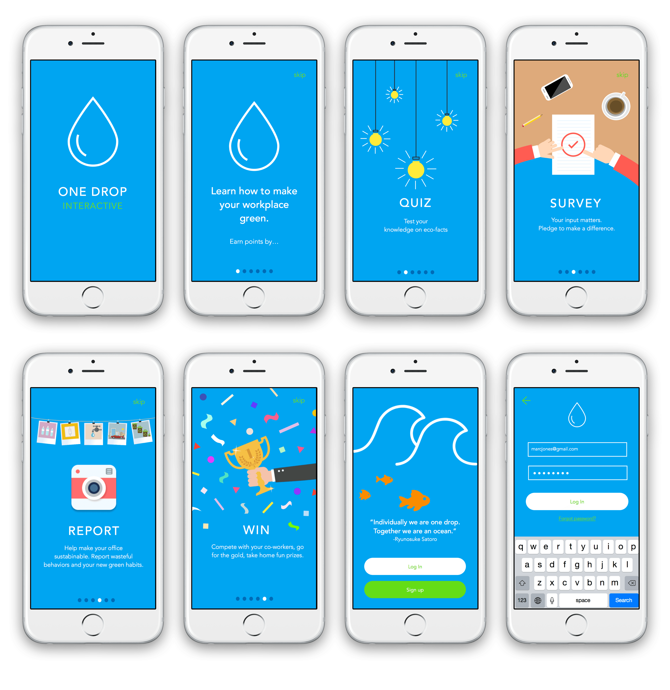
Education that Delights
We created a trivia-inspired quizzes that feel fun.
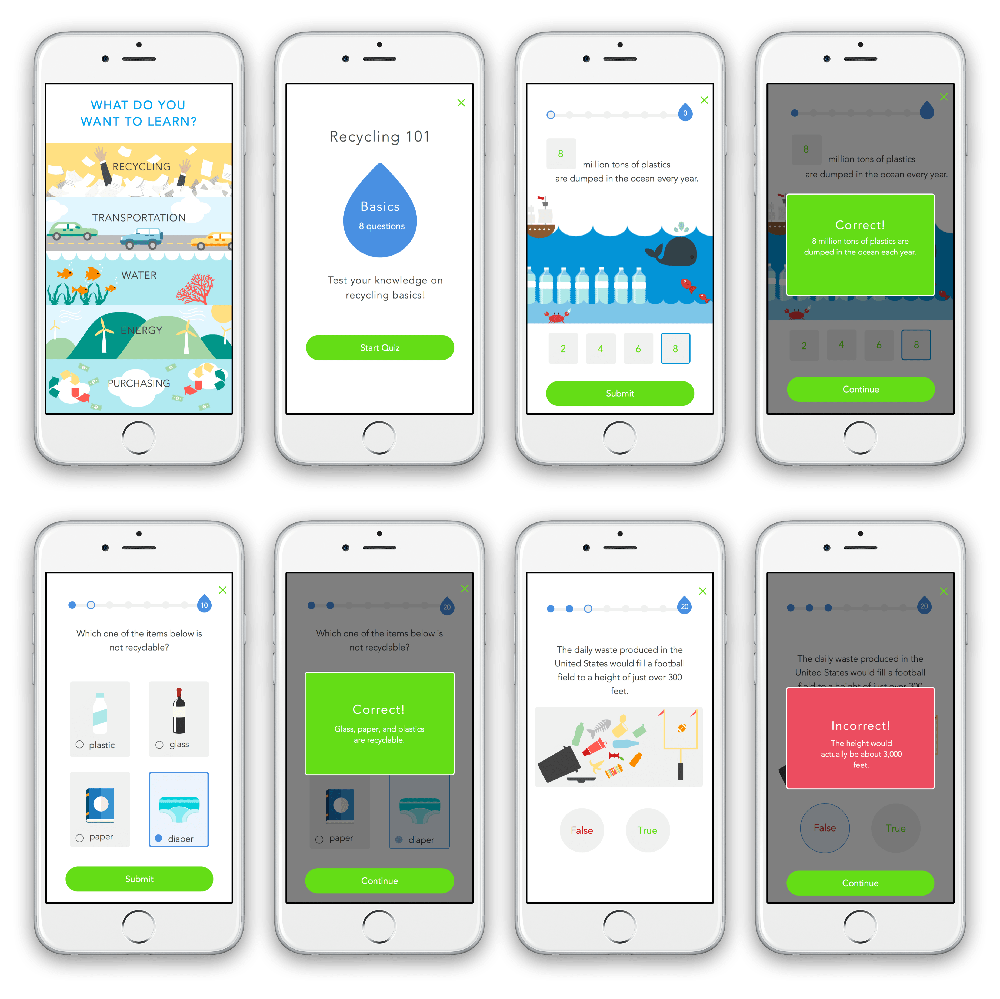
Multiple Ways to Earn Points
Taking advantage of the mobile context along with our CEO's request for more ways to earn points, we implemented a camera feature that allows users to report unsustainable workplace practices.
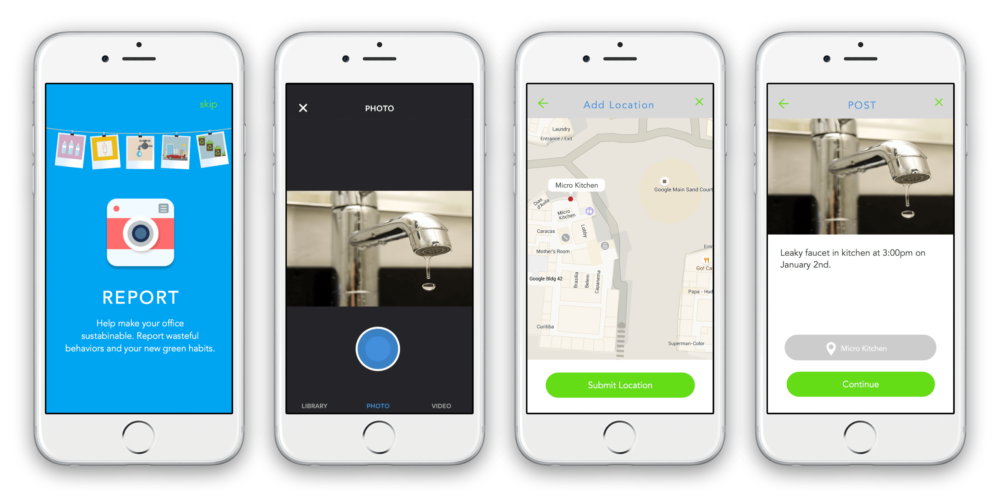
Keep Track of Progress on the Go
An interactive profile page allows users to check their individual and team progress on the go.
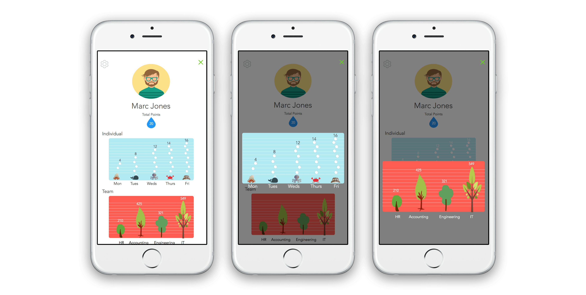
Explore our Clickable Prototype
- - - - - - - - - - - - - - - - - -
And Now Learn About How We Got There...
Project Overview
One Drop Interactive needs a mobile platform that can be used in conjunction with their current desktop program.
Features, Please
Must Have: Allows users to continue to earn points away from their desktop.
Nice to Have: (1) A photo-reporting feature to record wasteful behaviors in the office (lights on all night, leaky faucets..) (2) A geo-based rewards program.
Timeframe
14 business days.
My Team
For this project, I was lucky enough of working with Alyse Gilbert, Evangeline Hsiao and Tiffany Koh
My Role
Ideation, Interview, Market Research, CCA, Business Canvas, Personas, Site Map, Sketches, Low-Fidelity Wires, Categories Page, High Fidelity Prototype
Tools
- - - - - - - - - - - - - - - - - -
Business Canvas Model
To make sure we kept the company's existing business model in mind during the entire ideation and design process, our first line of business was to created a Business Canvas Model for One Drop Interactive. This visual chart depicts the company's value proposition, infrastructure and customer needs.
Analyzing Current Platform
We also spent some time doing a task analysis on One Drop Interactive's desktop platform. The current user flow requires users to watch videos, take a quiz related to the video, conduct a brief survey and then make an environmentally friendly pledge.
During this task analysis, we realized that directly translating the desktop experience and content to mobile would not benefit the stakeholder nor the users.
Comparative Competitive Analysis
We spent 3 of our 14 days doing research. We created a CCA on mobile apps with similar features to what One Drop's team was looking to incorporate into their mobile experience. We focused on well-liked E-Learning, Gaming and Photography apps.
- 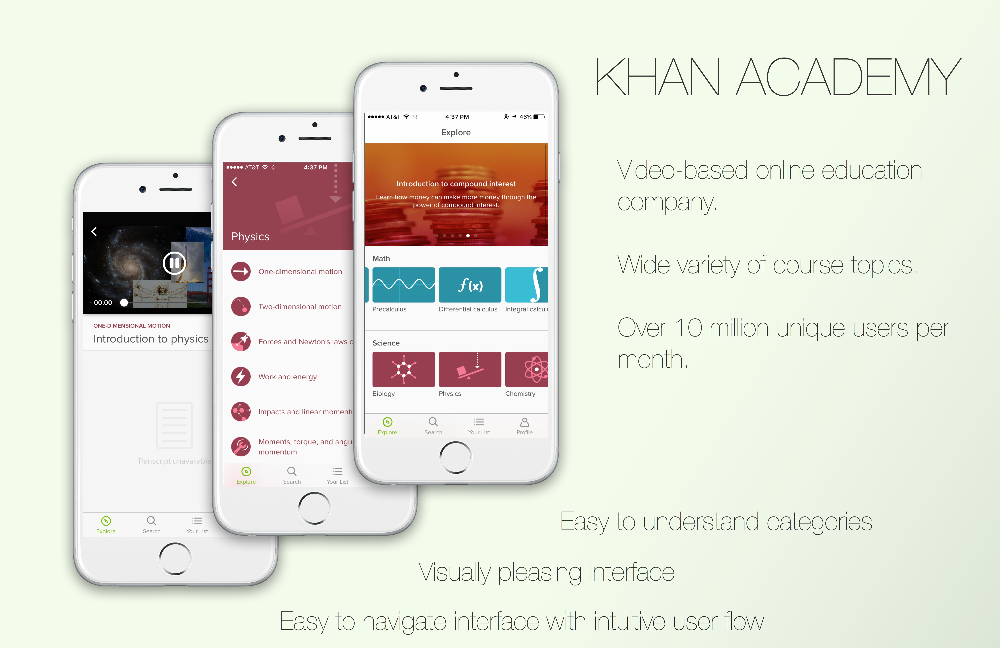

User Research
Before we dove deeper into research and ideation, we needed to examine current user behavior. We created a survey that focused on gaining insight on behaviors and opinions towards e-learning. We initially hoped to survey current One Drop Interactive users so we could compile specific data points related to e-learning in the workplace with an even more specific sub-category of environmental sustainability. Unfortunately due to non-disclosure agreements with companies using the platform, we did not have access to this specific userbase nor any demographic information about them.
Creating a user-centered design without access to users posed a unique challenge for us as a team. We had to approach the UX process from a completely different angle, as a result, our focus on market research and user-testing intensified.
Personas
Based off of heuristic evaluation and input from One Drop's team, we came up with two unique personas
Storyboards
Instead of traditional text-only scenarios, we created storyboards to visually empathize with Marc and Julia.
Proposed Sitemap & User Flow
To to get a handle on the volume and complexity of the content and to determine what screens were essential in our design, we created a Site Map and User Flow.
Sketching Our Ideas
With the Information Architecture mapped out, we went to the whiteboard walls to brainstorm and sketch our first iteration of One Drop’s new mobile experience.
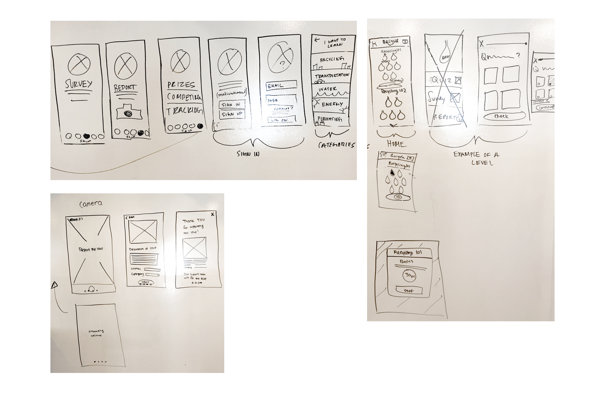
Translating to Paper Prototypes
We translated our inital sketches to paper and made a clickable prototype using the POP app. We were then able to start testing our design.
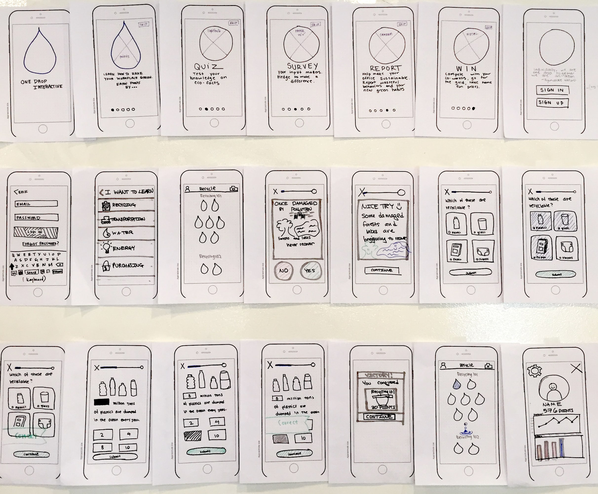
Low-Fidelity Wireframes
Our next step was to translate our paper prototype into digital renderings. We made low fidelity wireframes using Sketch. We uploaded these wireframes to InVision create a clickable prototype to test with users.
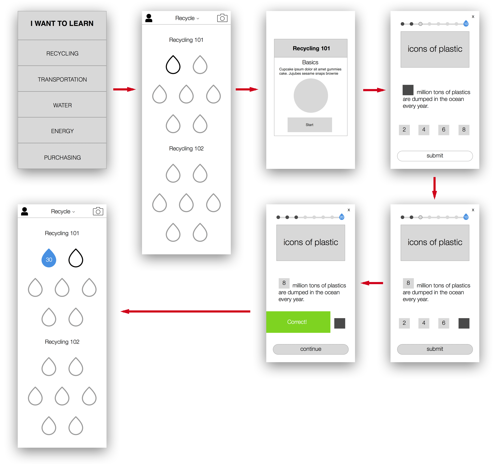
Validating MVP With User Testing
Since we were unable to test our MVP on actual users of the One Drop Interactive platform, we extensively tested every single version of our design, and made iterations along the way. Here are some examples of changes we made:
- 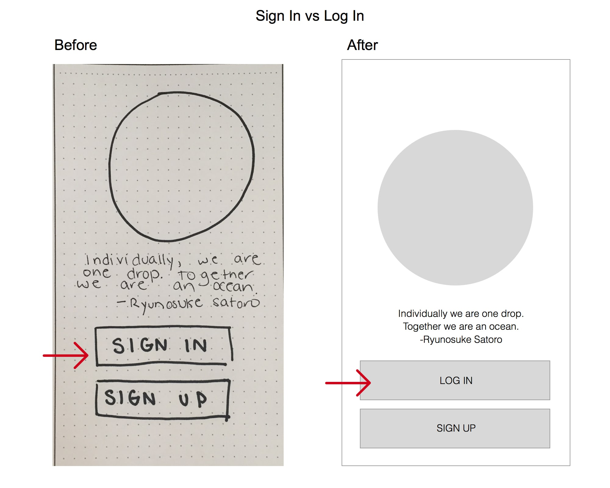
- 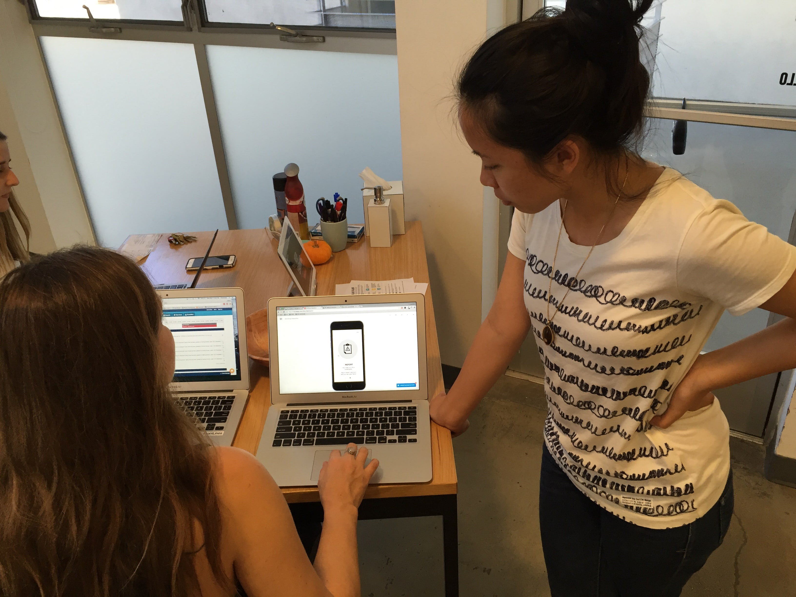

- 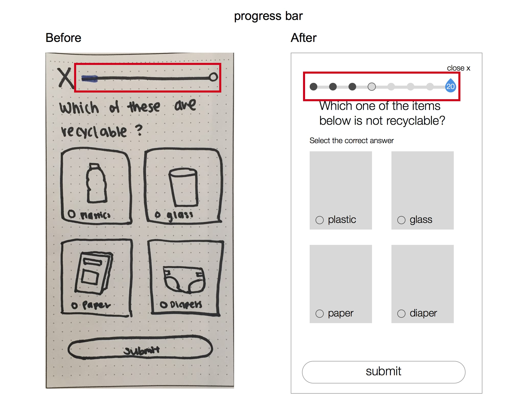
- 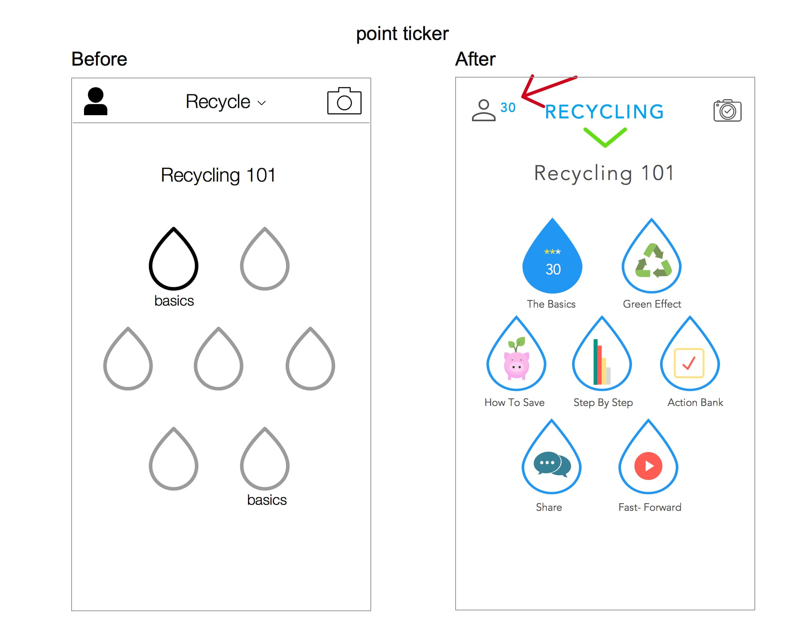

Style Guide
In order for us to all get our hands dirty in the creation of our hi-fi mockups we created a style guide to ensure brand consistency throughout all the collateral we produce-- no matter who created it. Our style guide included, iconography, typography, a reimagined logo,as well as a color palette. This helped us move the hi-fi designs forward with a more focused UI style in mind.
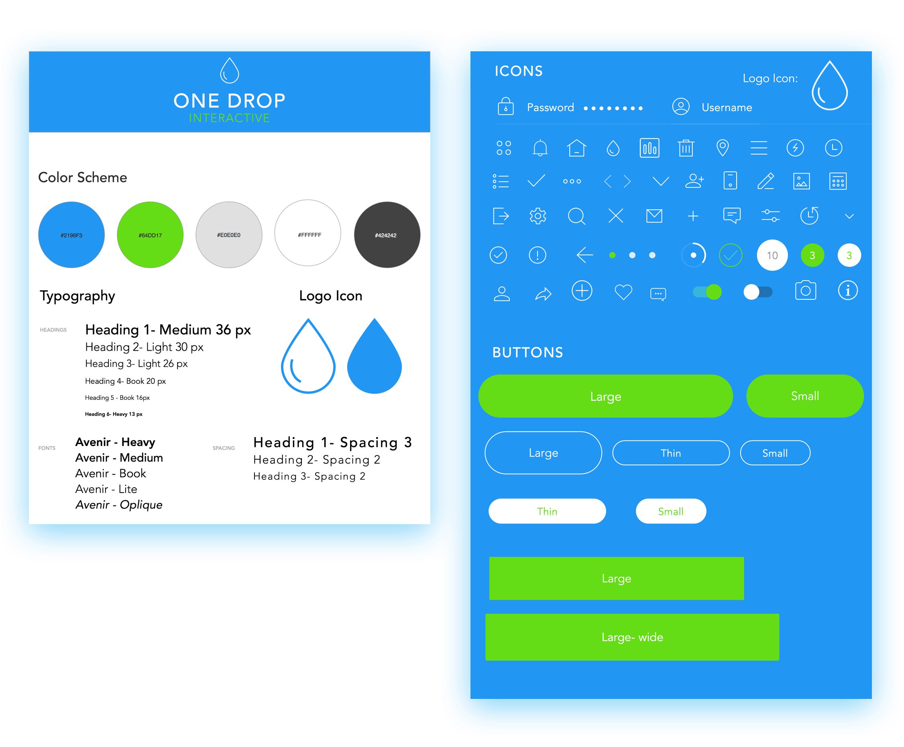